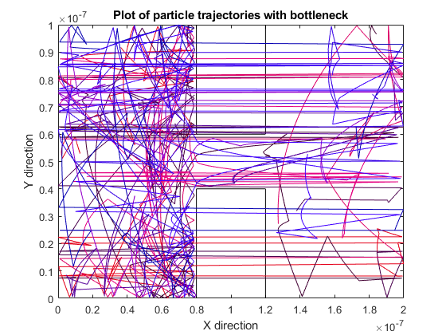
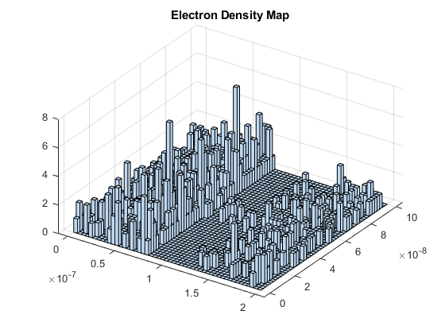

clearvars
clearvars -GLOBAL
global C
global X Y
C.q_0 = 1.60217653e-19;
C.hb = 1.054571596e-34;
C.h = C.hb * 2 * pi;
C.m_0 = 9.10938215e-31;
C.kb = 1.3806504e-23;
C.eps_0 = 8.854187817e-12;
C.mu_0 = 1.2566370614e-6;
C.c = 299792458;
C.g = 9.80665;
mn=0.26*C.m_0;
Temp = 300;
rTime=10000;
MTBC = 0.2e-12;
Vleft = 0.1;
electronConc = 10e15;
s1 = 1;
s2 = 0.01;
Vth = sqrt(2*C.kb*Temp/mn);
workX = 200*10^-9;
workY = 100*10^-9;
area = workX*workY;
size=1000;
displaySize=10;
X = rand(2,size);
Y = rand(2,size);
Xpos(1,:)= X(1,:)*workX;
Ypos(1,:)= Y(1,:)*workY;
checkXboxleft = Xpos > 0.8e-7;
checkXboxright = Xpos < 1.2e-7;
checkXbox = checkXboxleft & checkXboxright;
checkYBoxbottom = Ypos < 0.4e-7;
checkBoxbottom = checkYBoxbottom & checkXbox;
checkYBoxtop = Ypos > 0.6e-7;
checkBoxtop = checkYBoxtop & checkXbox;
checkboxes = checkBoxtop | checkBoxbottom;
while(sum(checkboxes) > 0)
Xpos(checkboxes) = rand*workX;
Ypos(checkboxes) = rand*workY;
checkXboxleft = Xpos > 0.8e-7;
checkXboxright = Xpos < 1.2e-7;
checkXbox = checkXboxleft & checkXboxright;
checkYBoxbottom = Ypos < 0.4e-7;
checkBoxbottom = checkYBoxbottom & checkXbox;
checkYBoxtop = Ypos > 0.6e-7;
checkBoxtop = checkYBoxtop & checkXbox;
checkboxes = checkBoxtop | checkBoxbottom;
end
colour = rand(1,displaySize);
Vthn = Vth/sqrt(2);
Xvel = Vthn*randn(1,size);
Yvel = Vthn*randn(1,size);
spacStep = 0.01*workY;
dt = spacStep/Vth;
steps = 1000;
Xvel(1,:) = Xvel(1,:)*dt;
Yvel(1,:) = Yvel(1,:)*dt;
Pscat=1-exp(-(dt/MTBC));
MFPcount = zeros(1,size);
Efield = Vleft/workX;
force = Efield*C.q_0;
acceleration = force/mn;
accelVelocity = acceleration*(dt^2);
xbox = [0.8e-7 1.2e-7];
yboxbottom = [0 0.4e-7];
yboxtop = [0.6e-7 workY];
squares = 100;
xResolution = workX/squares;
yResolution = workY/squares;
[MX,MY] = meshgrid(0:xResolution:workX,0:yResolution:workY);
xBoxlogic = MX>=xbox(1) & MX<=xbox(2);
yBoxlogic = MY>=yboxtop(1) | MY<=yboxbottom(2);
Boxlogic = xBoxlogic & yBoxlogic;
Smap = zeros(squares+1);
Smap(Boxlogic) = s2;
Smap(~Boxlogic) = s1;
voltage = 0.8;
G = sparse(squares+1);
B = zeros(squares+1,1);
for i =1:1:squares
for j =1:1:squares
n = j+(i-1)*squares;
nxm = j+(i-2)*squares;
nxp = j+i*squares;
nyp = j+1+ (i-1)*squares;
nym = j-1+ (i-1)*squares;
if(i==1)
G(n,:) = 0;
G(n,n) = Smap(i,j);
B(n) = voltage;
elseif(i==squares)
G(n,:) = 0;
G(n,n) = Smap(i,j);
B(n) = 0;
elseif(j==1)
G(n,:) = 0;
G(n,nxm) = (Smap(i-1,j)+Smap(i,j))/2;
G(n,nxp) = (Smap(i+1,j)+Smap(i,j))/2;
G(n,nyp) = (Smap(i,j+1)+Smap(i,j))/2;
G(n,n) = -(G(n,nxm)+G(n,nxp)+G(n,nyp));
elseif(j==squares)
G(n,:) = 0;
G(n,nxm) = (Smap(i-1,j)+Smap(i,j))/2;
G(n,nxp) = (Smap(i+1,j)+Smap(i,j))/2;
G(n,nym) = (Smap(i,j-1)+Smap(i,j))/2;
G(n,n) = -(G(n,nxm)+G(n,nxp)+G(n,nym));
else
G(n,:) = 0;
G(n,nxm) = (Smap(i-1,j)+Smap(i,j))/2;
G(n,nxp) = (Smap(i+1,j)+Smap(i,j))/2;
G(n,nyp) = (Smap(i,j+1)+Smap(i,j))/2;
G(n,nym) = (Smap(i,j-1)+Smap(i,j))/2;
G(n,n) = -(G(n,nxm)+G(n,nxp)+G(n,nyp)+G(n,nym));
end
end
end
V = G\B;
Vmap = zeros(squares);
for i =1:1:squares
for j =1:1:squares
n=i+(j-1)*squares;
Vmap(i,j) =V(n);
end
end
[Ex,Ey] = gradient(Vmap*10^6);
forcex = -Ex*C.q_0;
forcey = -Ey*C.q_0;
accelerationX = forcex/mn;
accelerationY = forcey/mn;
accelVelocityX = accelerationX*(dt^2);
accelVelocityY = accelerationY*(dt^2);
figure(7)
boxplotX = [0.8e-7 0.8e-7 1.2e-7 1.2e-7];
boxplotY = [0 0.4e-7 0.4e-7 0];
plot(boxplotX,boxplotY,'color',[0 0 0]);
hold on
boxplotY = [1e-7 0.6e-7 0.6e-7 1e-7];
plot(boxplotX,boxplotY,'color',[0 0 0]);
for i = 1:1:steps
for L = 1:1:squares
for W = 1:1:squares
axlogic = Xpos < L*xResolution & Xpos>(L-1)*xResolution;
aylogic = Ypos < W*yResolution & Ypos>(W-1)*yResolution;
Xvel(axlogic) = Xvel(axlogic)+ accelVelocityX(L,W);
Yvel(aylogic) = Yvel(aylogic)+ accelVelocityY(L,W);
end
end
scattered=rand(1,size);
scatterCheck = scattered<=Pscat;
velocity = Vthn*randn(1,size);
Xvel(scatterCheck) = velocity(scatterCheck)*dt;
velocity = Vthn*randn(1,size);
Yvel(scatterCheck) = velocity(scatterCheck)*dt;
tvelocity = sqrt((Xvel/dt).^2 +(Yvel/dt).^2);
MFPcount(~scatterCheck) = MFPcount(~scatterCheck)+spacStep;
checkXboxLeftXreflect = (Xpos + Xvel)>(xbox(1)-spacStep);
checkXboxRightXreflect= (Xpos + Xvel)<(xbox(2)+spacStep);
checkYboxbotXreflect = (Ypos + Yvel)>yboxbottom(1) &(Ypos + Yvel)<yboxbottom(2);
bottomBoxX = checkXboxLeftXreflect & checkXboxRightXreflect & checkYboxbotXreflect;
Xvel(bottomBoxX) = Xvel(bottomBoxX).*(-1);
checkXboxLeftYreflect = (Xpos + Xvel)>xbox(1);
checkXboxRightYreflect= (Xpos + Xvel)<xbox(2);
checkYboxbotYreflect = (Ypos + Yvel)>yboxbottom(1) &(Ypos + Yvel)<(yboxbottom(2)+spacStep);
bottomBoxY = checkXboxLeftYreflect & checkXboxRightYreflect & checkYboxbotYreflect;
Yvel(bottomBoxY) = Yvel(bottomBoxY).*(-1);
checkYboxtopXreflect = (Ypos + Yvel)>yboxtop(1) &(Ypos + Yvel)<yboxtop(2);
topBoxX = checkXboxLeftXreflect & checkXboxRightXreflect & checkYboxtopXreflect;
Xvel(topBoxX) = Xvel(topBoxX).*(-1);
checkYboxtopYreflect = (Ypos + Yvel)>(yboxtop(1)-spacStep) &(Ypos + Yvel)<yboxtop(2);
topBoxY = checkXboxLeftYreflect & checkXboxRightYreflect & checkYboxtopYreflect;
Yvel(topBoxY) = Yvel(topBoxY).*(-1);
checkXright = Xpos + Xvel > 2e-7;
Xpos(checkXright) = Xpos(checkXright)+ Xvel(checkXright)- workX;
checkXleft = Xpos + Xvel<0;
Xpos(checkXleft) = Xpos(checkXleft) + Xvel(checkXleft)+ workX;
leftover = ~(checkXright | checkXleft);
Xpos(leftover) = Xpos(leftover) +Xvel(leftover);
checkY = (Ypos+Yvel>1e-7 | Ypos+Yvel<0);
Yvel(checkY) = Yvel(checkY).*(-1);
Ypos(1,:) = Ypos(1,:)+Yvel(1,:);
prevX(i,:) =Xpos(1,:);
prevY(i,:) =Ypos(1,:);
end
for j = 1:1:displaySize
plot(prevX(:,j),prevY(:,j),'color',[colour(1,j) 0 j/displaySize])
xlim([0 workX])
ylim([0 workY])
hold on
drawnow
end
title('Plot of particle trajectories with bottleneck'),xlabel('X direction'),ylabel('Y direction')
figure(8)
hist3([Xpos',Ypos'],[50,50]);
view(34,45)
title('Electron Density Map')
disp('Part3(b): The density plot shows the elctrons getting caught at the entrance to the bottleneck.')
disp('part3(c): The next step of this program is to make it more accurate by raising the resolution of the G matrix')
Part3(b): The density plot shows the elctrons getting caught at the entrance to the bottleneck.
part3(c): The next step of this program is to make it more accurate by raising the resolution of the G matrix
 